Na sprzedaż Volkswagen Passat Kombi z 2017 roku.
Auto z niezawodnym silnikiem benzynowym 1.8 TSI o mocy 180 KM – bardzo dobre połączenie dynamiki i rozsądnego spalania. Sprawdzi się zarówno w mieście, jak i na dłuższych trasach.
Samochód jest przestronny i wygodny, dzięki nadwoziu typu kombi oferuje sporo miejsca dla pasażerów i duży bagażnik – idealny dla rodziny, na wakacje lub do codziennego użytku.
Możliwość finansowanie - kredyt, pożyczka leasingowa. Również finansowanie bez BIK i KRD (w tym przypadku rabat nawet do 7.000 PLN !!!)
Wystawiamy fakturę vat
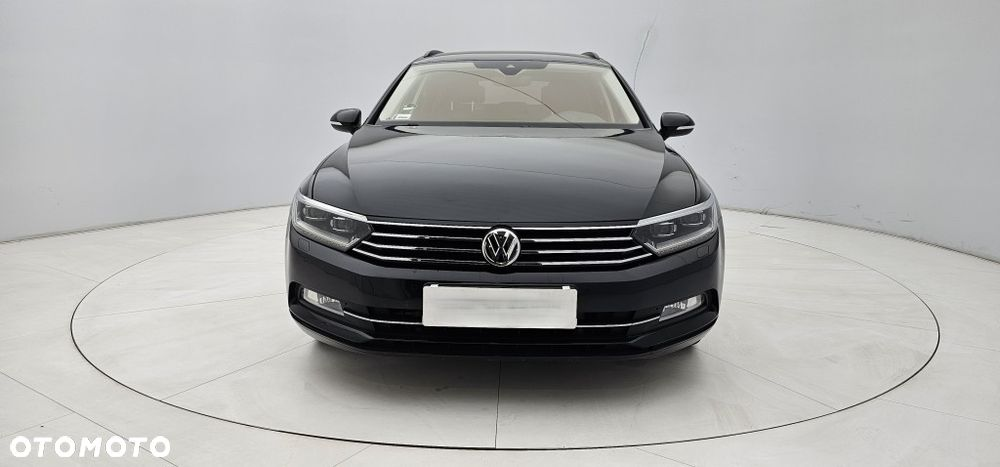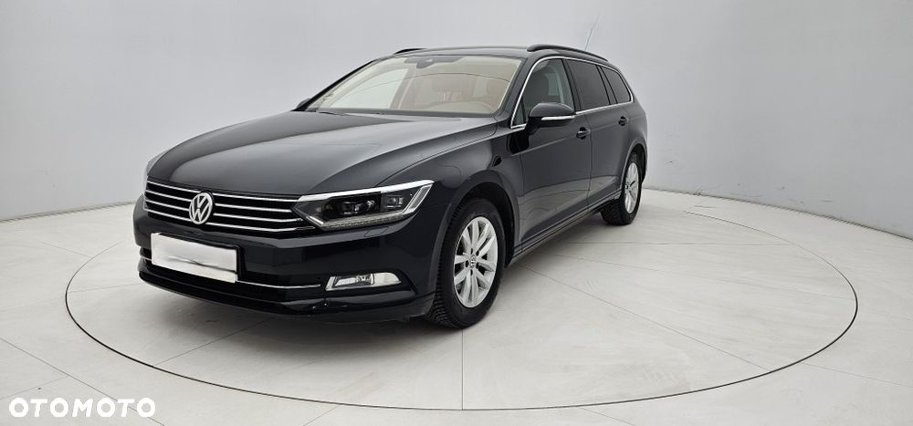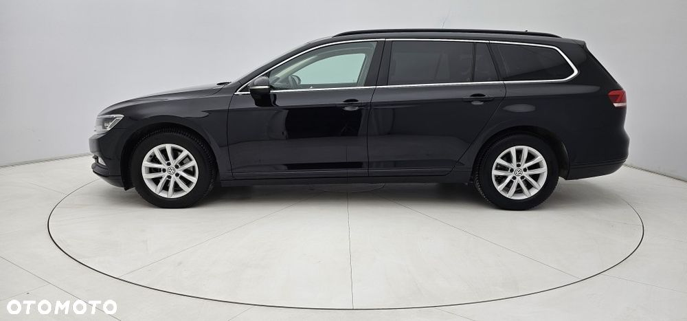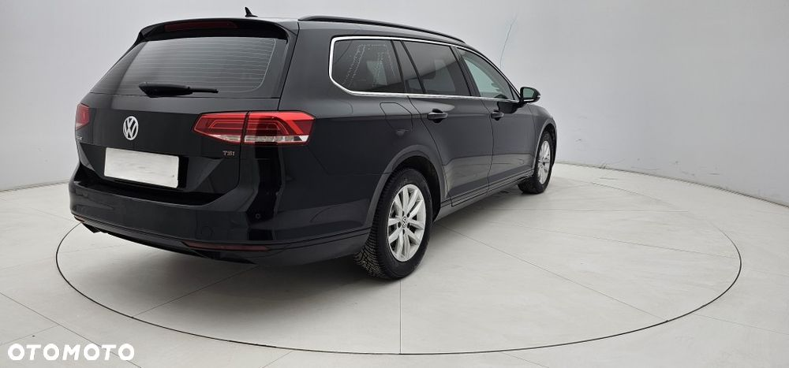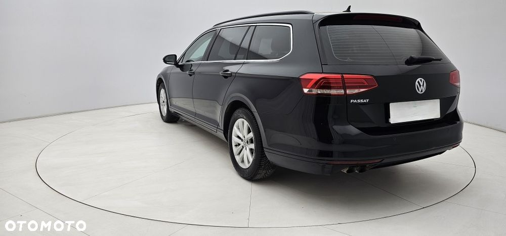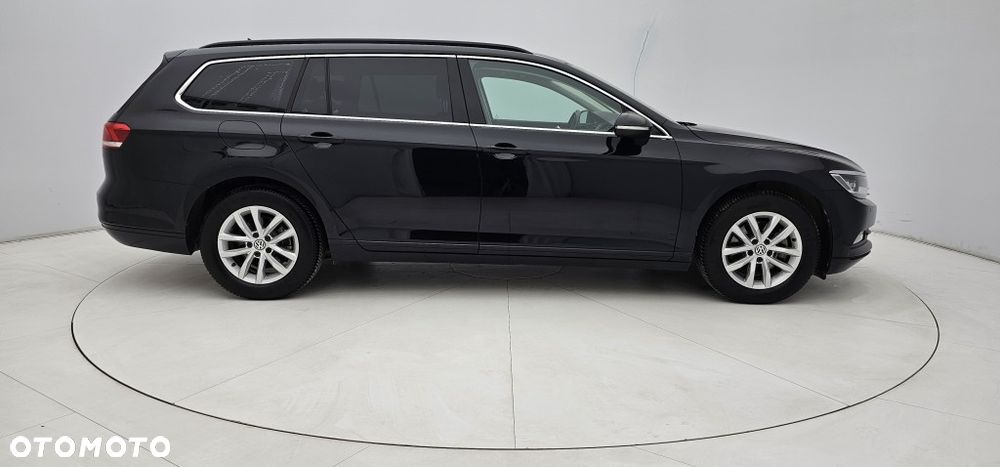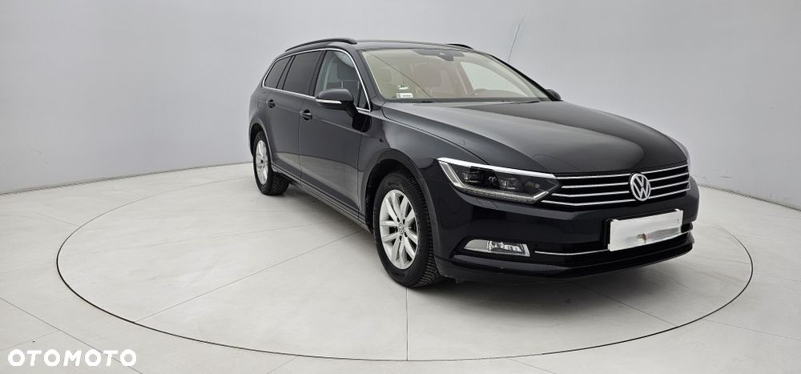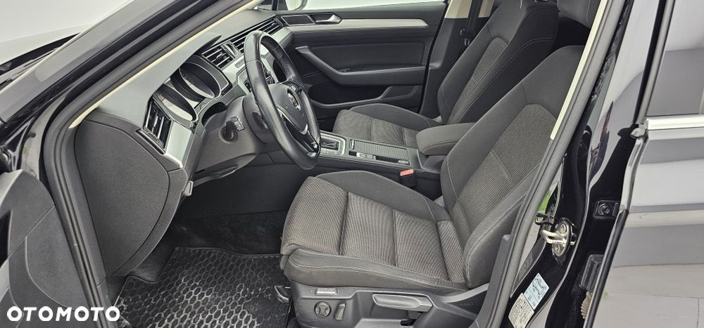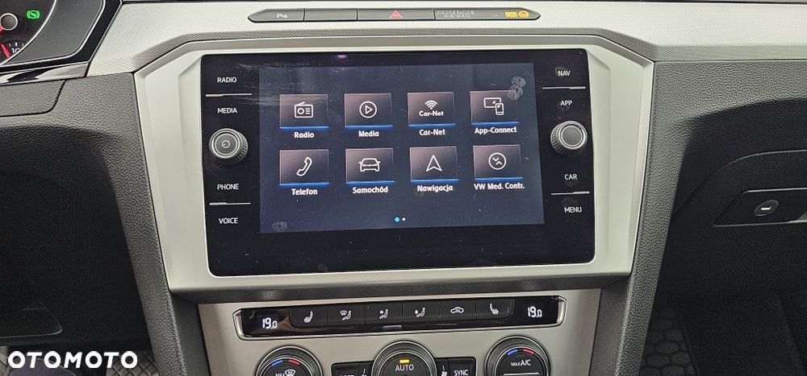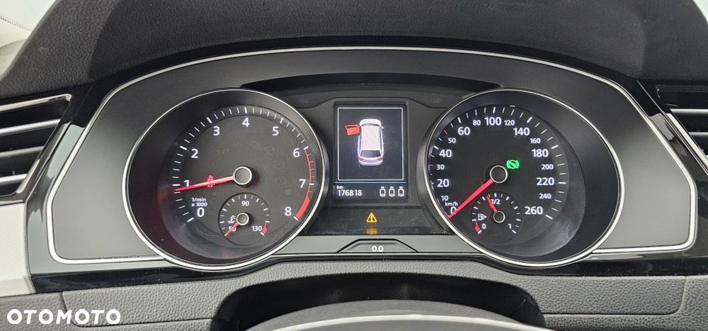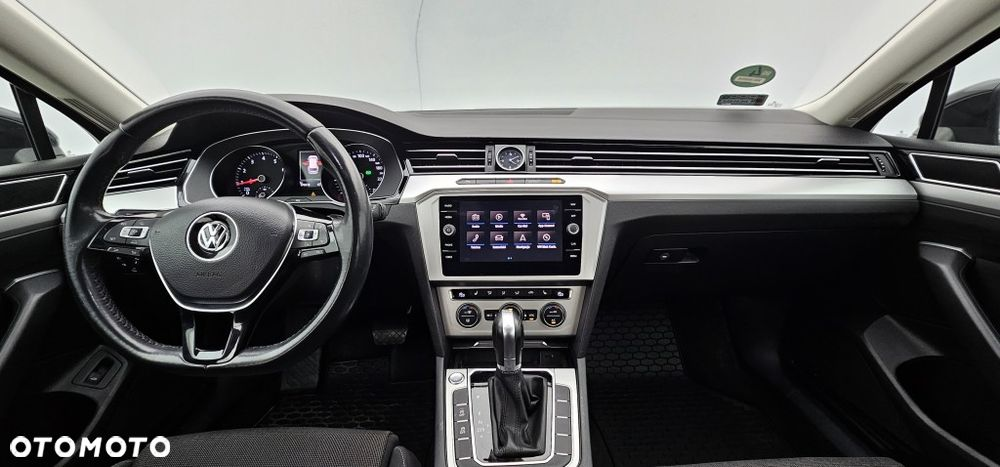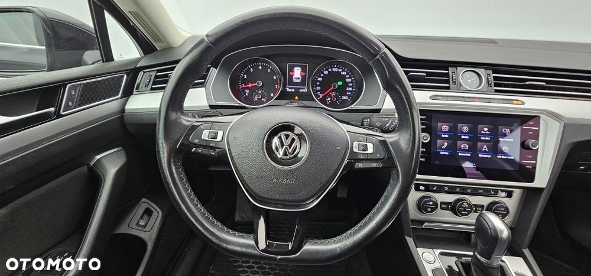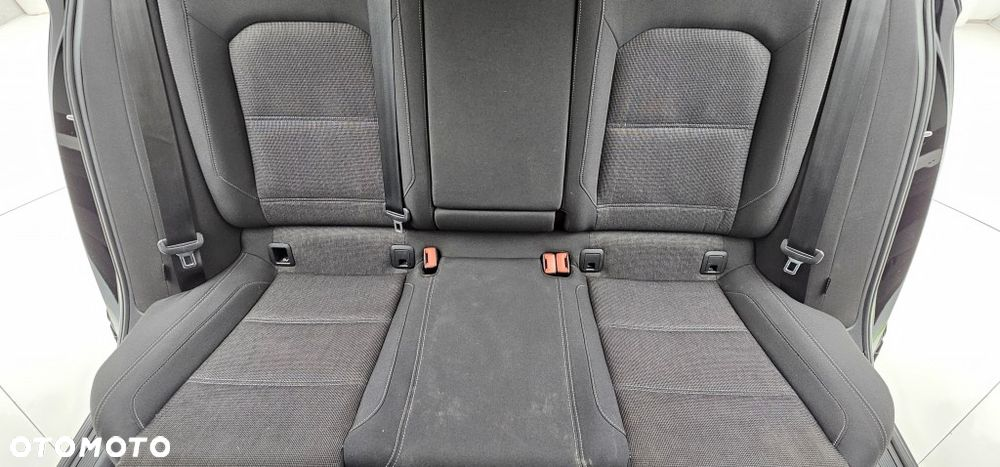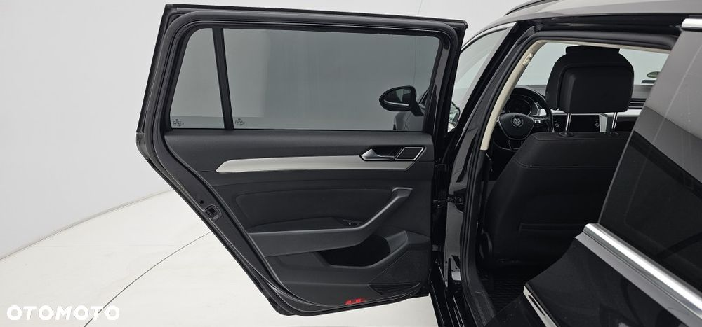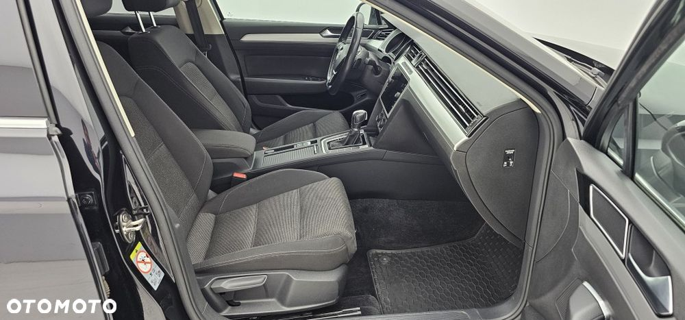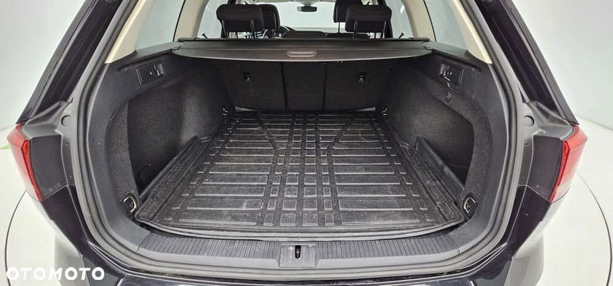